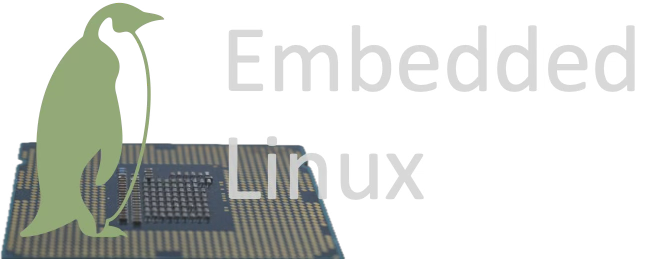
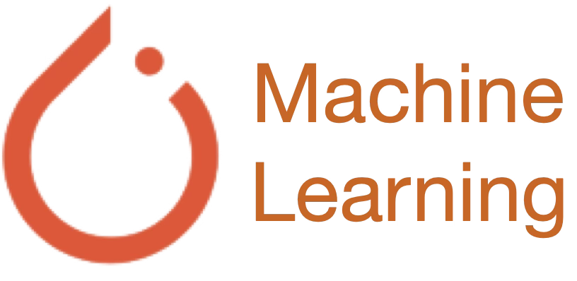

Taking a few step above the machine instructions, we could enter the amazing land of a programming language called C. I have created this repository to 'show off' my skills and knowledge about this simple yet extremely powerful programming language. This repository would contain basic illustrative examples, subsystems and modules. I have extensive background in firmware development and embedded engineering where the C language is a power house.

It is undeniable that Python is an incredibly powerful and handy interpreting language that can be used in so many different contexts from pure academic research to test automation and to industry-level software solutions. This is especially true in the field of embedded engineering where Python is widely used for automation, variety of different automated testing, and debugging and instrumentation interfacing. I have created this repository to demonstrate my working knowledge of this enabling tool.

Well, C++ rules! Although it does not receive much love, which is understandable, this programming language has been the corner stone for much of the software and digital commerce in the past decades of human civilization. This language also plays a key role in firmware developments and embedded engineering. It's widely used to create portable and scalable applications that run on embedded devices where its unique and advanced features is very handy. In this repository, I plan to add C++ developments in a bare-metal fashion for an embedded platform called STM32.

The Texas Instrument (TI) SimpleLink SDK is a development environment that enables building production-level firmware for the CC13xx and CC26xx wireless MCUs. This SDK also includes TI real time operating system (RTOS) facilitating application development for the real time embedded projects. To build and flash a firmware image, the TI's dedicated IDE called Code Composer Studio would be needed. In this repo, I create a custom two-way subGHz protocol to illustrate how this mighty sdk can be used!

The Zephyr real time operating system (RTOS) is a powerful and comprehensive open source RTOS that supports many embedded and microcontroller platforms. In this repository, I create and document a project that revolves around a custom BLE service that would be accessible by the phones. Relying on nRF52840dongle as the hardware platform, this repo clearly demonstrates how the build system and the features offered by Zephyr RTOS can be used to develop embedded projects.

Running linux on resource constrained platforms has become an integral part of the consumer electronic products from home appliances to the vehicle and automobile industry. Embedded linux encompasses a very interesting layer of expertise and skills in the world of embedded engineering. This repository documents and demonstrates the key aspects and nuances through incremental developments that are targeted for the beagle bone black as the hardware platform.

This is a machine learning repository based on pytorch. In this repo, the developments are added incrementally where the overarching goal would be projects at the intersection of machine learning and network engineering, particularly the federated machine learning and reinforcement learning over wired or wireless links. The projects will be added gradually over time, growing out of the simple base lines.